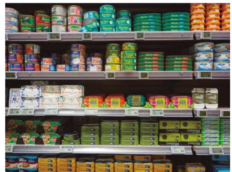
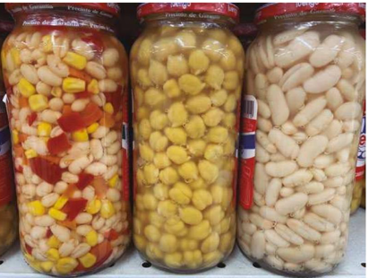
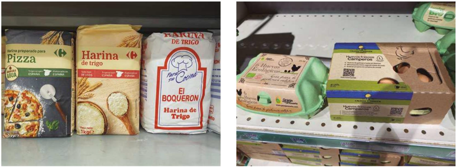

En función de las características del producto que se vaya a envasar, existen multitud de formatos de envase y embalaje, atendiendo al material utilizado, forma del envase, dimensiones y volumen interior, composición estructural del envase.
Los tipos de materiales comúnmente utilizados para el envase de productos alimentarios son los plásticos, metales, vidrio, madera y cartón.
Aparte de estos materiales, existen algunos más, bien sea de formulación completamente distinta o elaborados por la combinación de alguno de los anteriores.
Materiales plásticos
Los materiales plásticos son hoy en día la principal opción para el envasado y embalaje de cualquier tipo de producto. Son elaborados de formas muy diversas, incluyendo tipo botella, bolsa, caja, frasco, tubo.
Presentan características generales muy importantes, como la flexibilidad, plegabilidad, adaptabilidad y sobre todo su fácil manejo.
Dentro de los materiales metálicos empleados para el envasado y embalaje de alimentos, destacamos los envases de aluminio, de hojalata y de acero libre de estaño.
ALUMINIO
El aluminio presenta unas propiedades que lo convierten en una alternativa muy buena para el envasado de determinados productos.
Apariencia atractiva: de las alternativas de envases flexibles, el aluminio es el que más atractivo resulta para el ojo del consumidor.
Resistencia a los gases y vapor de agua.
Resistencia a la absorción: no modifica su estabilidad al estar en contacto con cualquier producto líquido.
Resistencia a la luz.
Impermeable a grasas.
Carencia de toxicidad.
Carencia de sabor y olor: no provoca modificaciones sensoriales de olor ni sabor sobre los alimentos contenidos.
Plegabilidad.
Conductibilidad del calor: es un material termoaislador, ya que es capaz de reflejar el 95% del calor radiante y emitir el 4%, protegiendo así al producto de las temperaturas externas.
La hojalata es un material heterogéneo formado por una delgada capa de acero dulce recubierto de estaño. Su uso en alimentación se limita prácticamente a frutas, sopas, legumbres, pescado, carnes y aceites.
ACERO LIBRE DE ESTAÑO (TFS)
Se usa el mismo acero base que para la hojalata, es mucho menos grueso y más económico que la anterior.

Carolina Muñoz. Ejemplos de productos envasados en hojalata y en acero libre de estaño.(CC BY-SA)
Vidrio
El vidrio como elemento para envasar productos alimentarios se lleva utilizando mucho tiempo. Principalmente, se emplea para la elaboración de botellas, frascos, jarras, tarros, incluyendo también gran diversidad de productos tanto líquidos como sólidos, alimentos en conserva…
Este material admite formulaciones ilimitadas, generando, por tanto, una amplia variedad de propiedades.
El empleo del vidrio en la industria alimentaria para el envasado se debe a una serie de características que presentan y que los hacen idóneos para ello.
Impermeabilidad a gases, vapor de agua y líquidos.
Químicamente inerte.
Material higiénico, fácil de esterilizar y lavar.
Visibilidad del producto.
Posibilidad de colorear.
Rigidez.
Resistencia a presiones internas.
Buena resistencia mecánica.
Material económico.

Carolina Muñoz. Ejemplo de productos envasados en vidrio.(CC BY-SA)
Madera
El envasado de alimentos en madera está muy limitado y es por ello por lo que su uso se centra en la elaboración de cajas y cajones para el transporte de los productos o para la contención de alimentos que ya vienen contenidos en otro tipo de envase.
Cartón
El tipo de cartón más usado para el envasado de productos como frutas o legumbres es el cartón corrugado. Su amplia utilización se debe a que en su elaboración se puede combinar con diferentes materiales y tipos de papel para dar gran versatilidad a la hora de obtener envases.

Carolina Muñoz. Ejemplo de distintos formatos de envasado en cartón y papel(CC BY-SA)